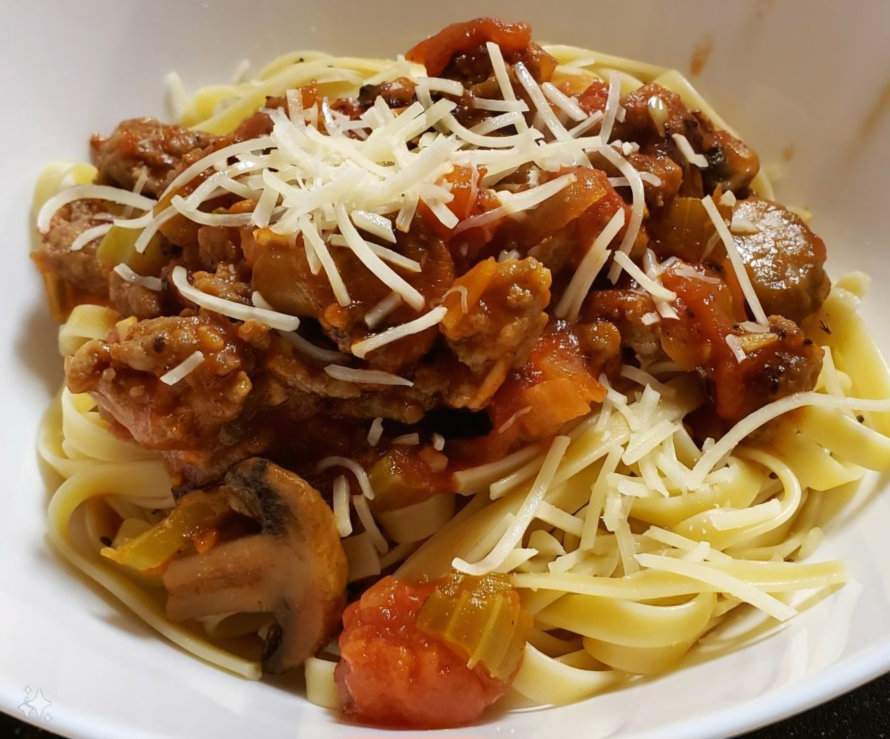

Sphagetti

Home
Description
This is my famous and super secret recipe for a rustic sphagetti style meat sauce over linguine.
Ingredients
Pantry Essentials
- Extra Virgin Olive Oil
- Freshly Cracked Black Pepper (Coarse)
- Sea Salt (Coarse)
- Table Salt (Fine)
- Red Pepper Flakes
- White Sugar
- Dried Oregano
- Fennel Seeds
- Worcestershire Sauce - 1 tbsp
- Milk - Just a splash!
Meat Sauce
- Italian Style Ground Pork - 1lb
- 1/2 White Onion - Finely Chopped
- Mushrooms - 8oz, Sliced
- 3-4 Celery Stalks - Chopped
- 6 Cloves of Garlic - Minced
- Fresh Rosemary - 1 tbsp, Minced
- Tomato Paste - 2 tbsp
- Red Wine - 1/2 to 1 cup to taste.
- Canned Whole Peeled Tomatoes - 28oz, CENTO San Marzano
Pasta
- Linguine Noodles - 1 Package, Uncooked
- Fresh Basil - 2 tbsp, Finely Chopped
- Parmesan Cheese - Finely Grated
Steps
Sauce
- Heat up a large skillet over medium-high heat.
- Once the pan is hot, add in enough Extra Virgin Olive Oil to coat the bottom.
- Add in about a tsp of Fennel Seeds and brown for 30 seconds.
- Add in the Italian Style Ground Pork and brown. Allow the meat
to sear undisturbed for 1-2 minutes to develop a good color.
- Once the pork has started to develop a seared crust, begin breaking up into smaller bite sized pieces. Season to taste with Freshly Cracked Black Pepper and Red Pepper Flakes.
- Add in 1/2 a diced White Onion and evenly disburse. Season with a pinch of Salt to draw out the liquid. Cook until the onion starts to become translucent.
- Add in 8oz of Sliced Mushrooms and 3-4 chopped Celery Stalks. Season with Salt and Pepper and add more Extra Virgin Olive Oil if needed to keep the vegetables from drying out.
- Increase heat if necessary to ensure that the vegetables are lightly seared and not steaming or boiled. Be sure not to overcook and stir often.
- Once the vegetables are mostly cooked through, create a small space in the center of the pan and add in 6 cloves of minced Garlic.
- Allow the garlic to sweat for 30 seconds and then mix well with the rest of the ingredients.
- Add in about 1 tbsp of Freshly Minced Rosemary to taste. Stir well.
- Create another small well in the center of the pan and add 1-2 heaping tablespoons of Tomato Paste. Spread the paste out evenly in the center of the pan and allow it to sweat off for 30 seconds to 1 minute. This will help to cook off some of the sourness.
- Once the Tomato Paste has had time to sweat, mix well with the other ingredients. All ingredients should be uniformly coated in the Tomato Paste.
- Add in 1/2 a cup to 1 full cup of Red Wine. It does not need to be expensive, but it should be palatable enough to enjoy on its own. I typically prefer a sweeter Red Wine such as Vella Delicious Red Boxed Wine, but feel free to experiment.
- Bring the wine to a boil and reduce by half. It should begin to take on a syrup-like texture. Be sure to reserve a glass for yourself. :)
- At this point you may add in the entire can of Canned Peeled Whole Tomatoes. The commonly recommended brand is CENTO San Marzano, but you may substitute with cheaper alternatives as long as you make sure that it is a 28oz can. To not offend the Italians, be sure to splash some water in the can and gather up all the remaining juice to add to the dish.
- At this stage I like to break up the tomatoes into smaller bite-sized pieces, but I still like to keep them a little chunky. This also allows the liquid to be incorporated into the sauce. Do this to your liking - It's okay to have larger tomato pieces. Mix well.
- Stir in about 1 tbsp of Worcestershire Sauce to deepen the color of the sauce and to add a bit of body.
- Mix in 1/3rd to 1/2 a cup of White Sugar. This will depend on the sweetness of your Red Wine and will need to be adjusted to taste. I usually like to complement the spiciness of the meat and vegetables by having the sauce itself be slightly on the sweeter side. This is all going to be based on your personal preference. It's important to realize that the flavors will all be subtly muted once we add a splash of Milk to thicken the sauce.
- Mix in the Dried Oregano and Table Salt to taste. Use small increments as you adjust for seasoning with the salt in particular, because it will require less than using the course Sea Salt.
Pasta
- Using the package instructions for the Uncooked Sphagetti, begin boiling a large pot of water.
- Add in the cooked Linguine Noodles and cook until al dente. Be sure to reserve 1 tbsp of the pasta water.
- Take several fresh Basil leaves and roll them together into a cigar type shape. Thinly slice the leaves being sure not to bruise the herbs.
- Toss the cooked Noodles with the sliced Basil to taste. A little can go a long way.
- Add 1 tbsp of the reserved pasta water into the Sphagetti Sauce. The starchy water helps to adhere the sauce to the noodles.
- Lastly, add a small splash of milk to the Sphagetti Sauce to thicken and provide a bit more body.
- Serve the Sphagetti Sauce over the cooked Noodles and enjoy!